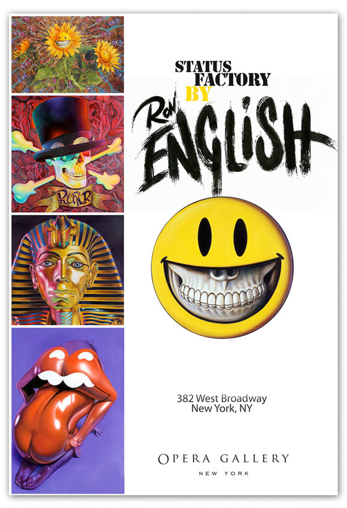
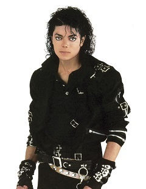

Exhibitions
Status Factory, Opera Gallery, New York, New York, US, September 12–October 29, 2010.
Literature
Ron English, Death and the Eternal Forever (Korero Press, 2014), p. 30. ISBN 978-0957664920.
Ron English, Status Factory: The Art of Ron English (San Francisco: Last Gasp of San Francisco, 2014), p. 60. ISBN 978-0867197891.
Ron English, Fauxlosophy: The Art of Ron English (Darlington: Carpet Bombing Culture, 2016), p. 10. ISBN 978-0867196566.
Ron English, Original Grin: The Art of Ron English (Paris: Cernunnos, 2019), p. 33. ISBN 978-2374950938.
Notes
This work is reproduced on the show card for Status Factory.
This work references the funerary mask of Tutankhamun.

It also references Michael Jackson; a representative image is available here.
Ancillary Documentation

